桔子大魔王 SCUM 一站式服务器管理工具
该工具集成了SCUM服务器日常管理的所有核心功能，界面美观，操作便捷，极大提升服务器运维效率。无论是新手还是资深管理员，都能轻松驾驭，打造高效、稳定的服务器环境。
主要功能：
- 服务器配置一站式管理，支持多种参数自定义，快速部署。
- 自动备份与还原，保障服务器数据安全，防止意外丢失。
- 自动更新服务器，保持环境最新，减少维护成本。
- 日志实时查看与分析，便于问题排查和安全监控。
- 傻瓜式操作，新手都可以一键开服。
- 支持一键下载服务器文件，也可以指定服务器文件。
- 实时监控玩家聊天，无须进入游戏。
- 功能强大，后续开发更多功能集成。
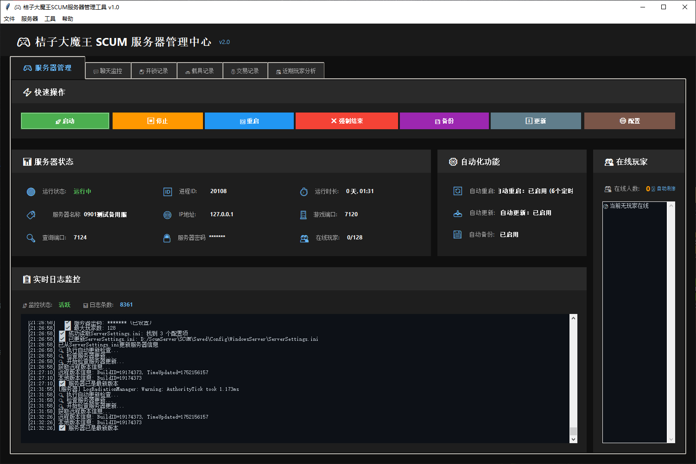
主界面：服务器整体状态一览，功能分区清晰，便于快速切换各项管理模块。
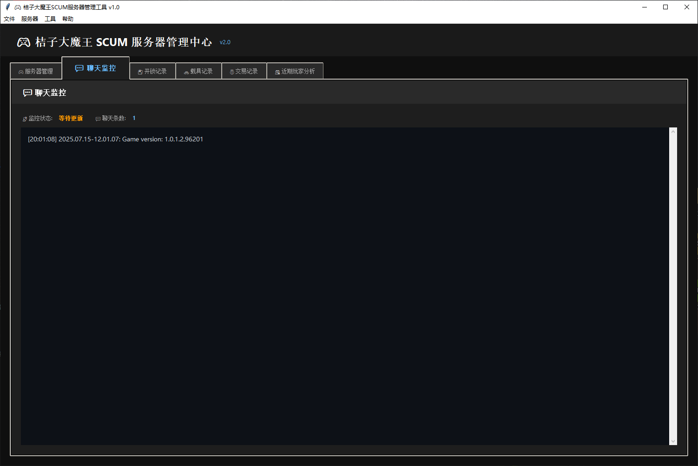
聊天监控：后台轻松查看玩家实时聊天，无须登入游戏。
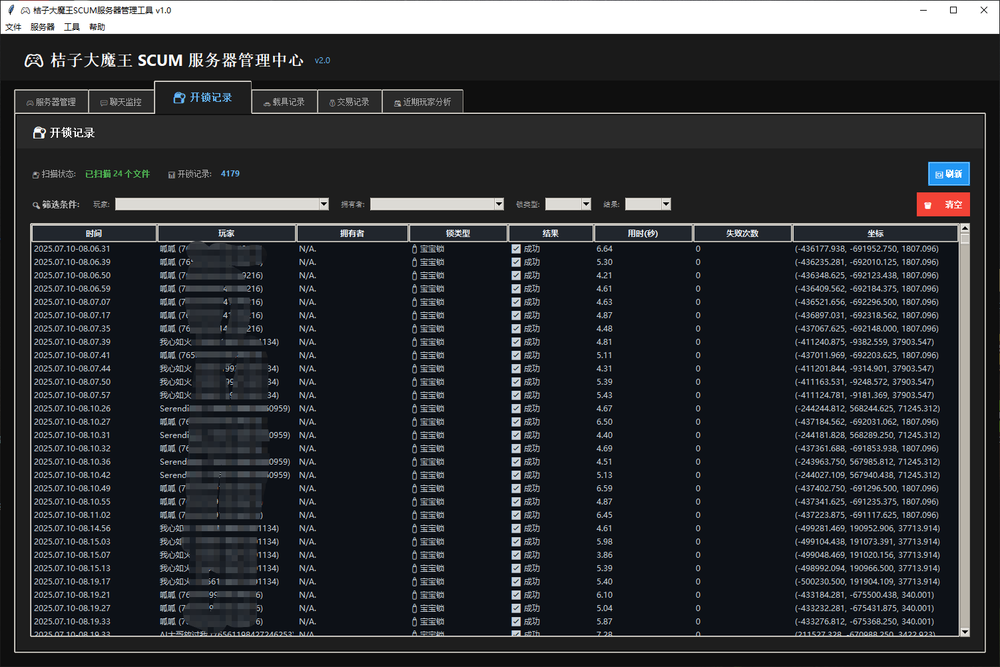
开锁记录查看，支持筛选玩家，锁类型等，方便查挂。
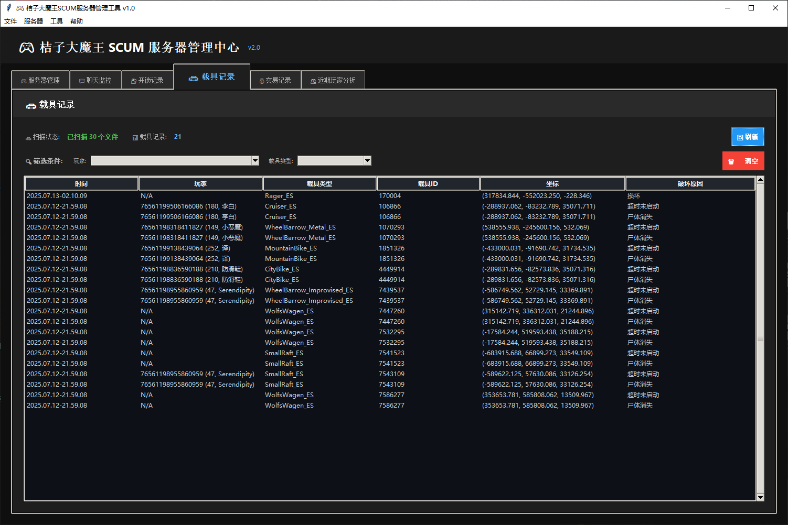
载具损坏记录，随时随地查看玩家载具损坏情况。
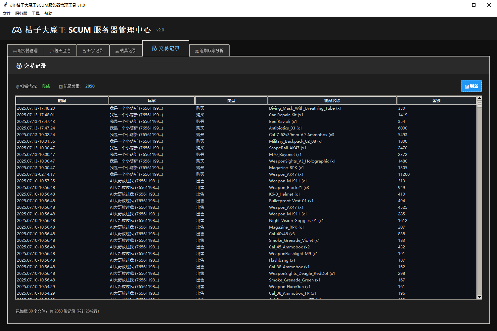
经济系统，随时查看玩家商店交易记录。
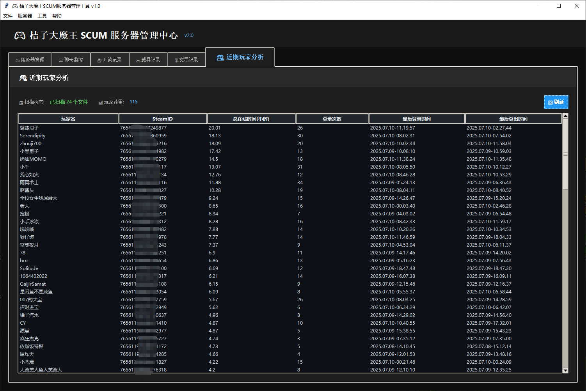
近期玩家统计，方便查看玩家数据，登录时长等。
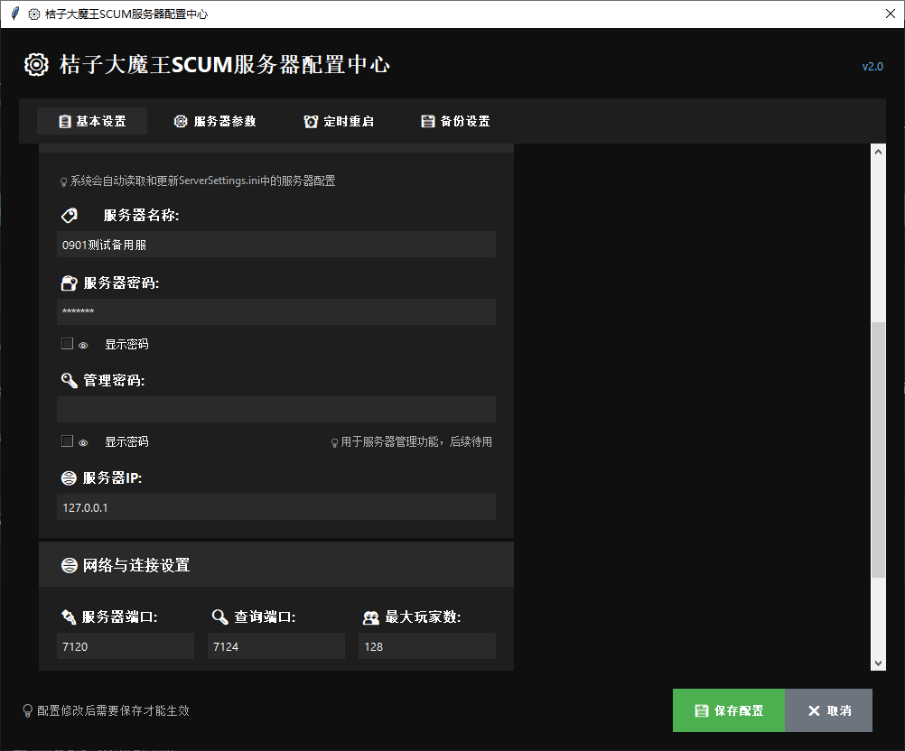
基本设置，服务器名字，端口等自动获取修改。
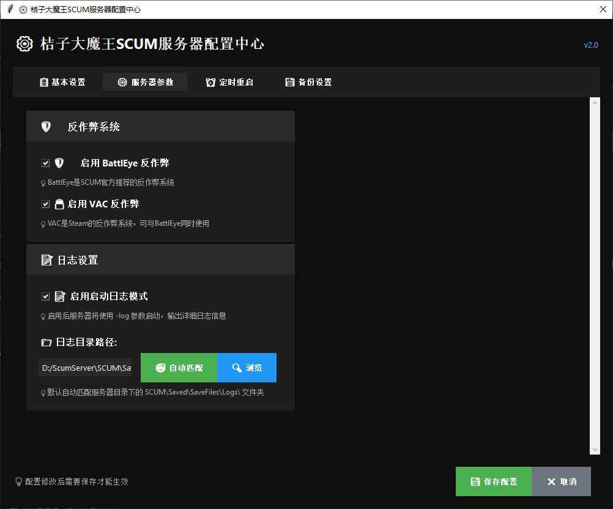
自定义开启反作弊模式，日志模式，和日志目录自定义设定。
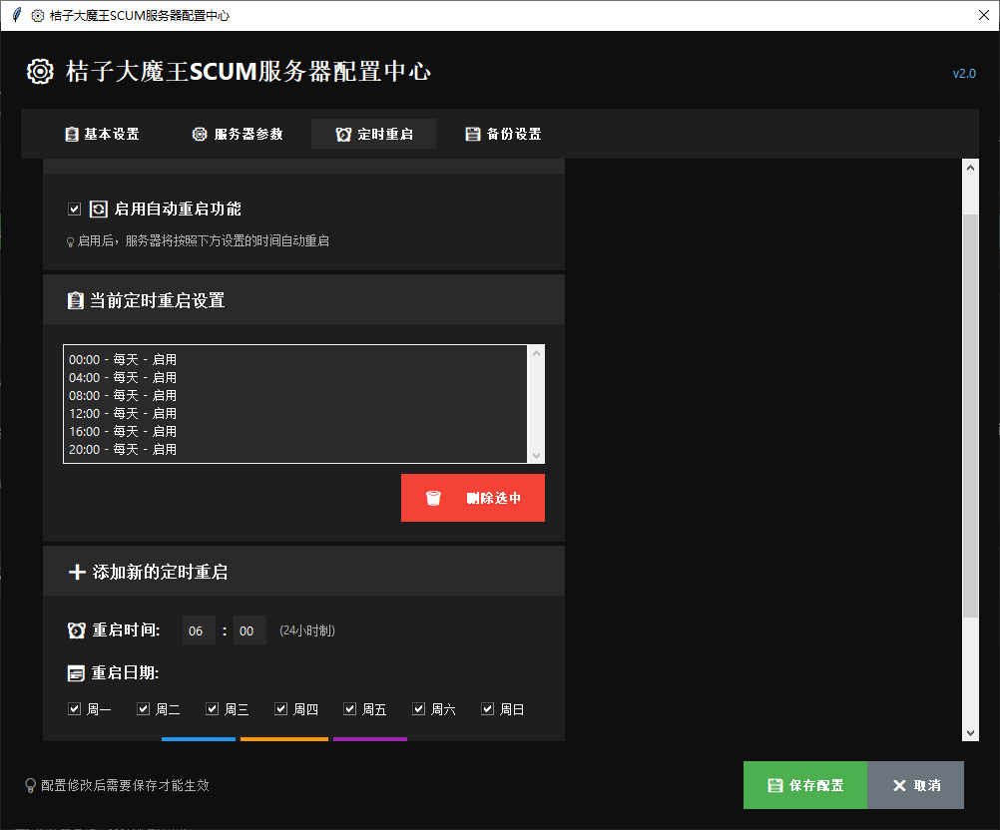
更先进的设置自动重启功能，可以定义日期，时间，随时添加删除。
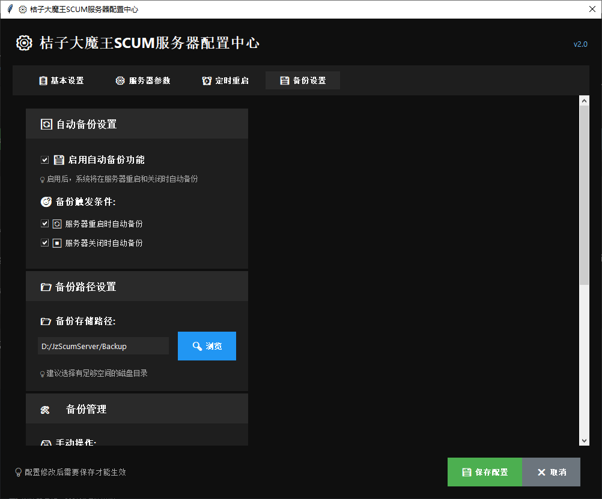
自动备份数据库及重要文件设置，防止数据丢失。
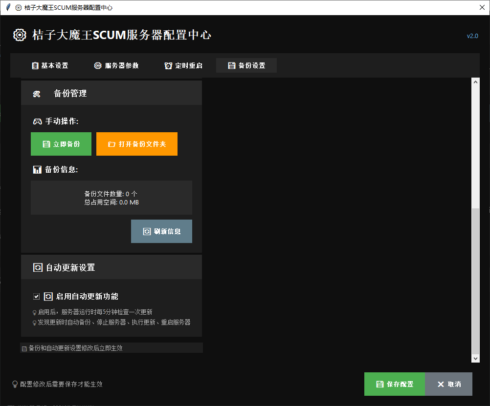
启动自动更新功能，自动检测服务器是否有更新，无需人工干预！
QQ群号：912885706 | 作者QQ：130228228